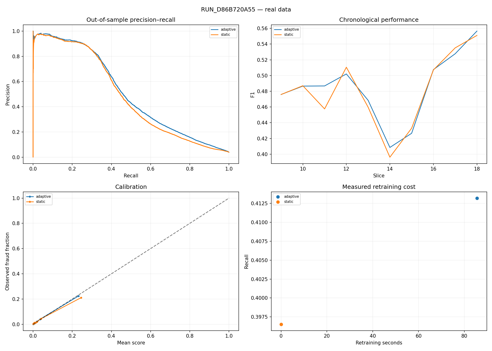

RUN_D86B720A55 · real data · out-of-sample only
Thresholds and calibration use prior chronological validation data. Daily alert budgets are retrospective review rankings. Average precision is used consistently. Timestamp basis: dataset-relative hours.
| overall_precision | overall_recall | overall_f1 | average_precision | brier_score | false_positives | false_negatives | |
|---|---|---|---|---|---|---|---|
| adaptive_model | 0.595885 | 0.413195 | 0.488002 | 0.511599 | 0.025854 | 2455 | 5141 |
| static_model | 0.621578 | 0.39653 | 0.484181 | 0.488673 | 0.026611 | 2115 | 5287 |

| model | daily_budget | alerts | detected_fraud | precision | recall | interpretation |
|---|---|---|---|---|---|---|
| adaptive | 100 | 7000 | 3785 | 0.540714 | 0.432028 | retrospective daily ranking; requires batch review |
| adaptive | 500 | 35000 | 6593 | 0.188371 | 0.752540 | retrospective daily ranking; requires batch review |
| static | 100 | 7000 | 3676 | 0.525143 | 0.419587 | retrospective daily ranking; requires batch review |
| static | 500 | 35000 | 6213 | 0.177514 | 0.709166 | retrospective daily ranking; requires batch review |
| model | retrains | training_seconds | initial_training_seconds |
|---|---|---|---|
| static | 0 | 0.000000 | 6.466626 |
| adaptive | 9 | 85.505273 | 6.466626 |
{
"adaptive": {
"mean_delta": 0.0038209722466210905,
"ci_95": [
-0.0008567569027601252,
0.009550713389008458
],
"n_bootstrap": 500,
"n_seeds": 1,
"temporal_blocks": 10,
"block_length_slices": 2,
"status": "conditional_on_observed_stream",
"method": "paired circular moving-block bootstrap; shared time draws across seeds",
"limitation": "Conditional on supplied periods; seeds do not add independent transaction populations."
}
}
{
"run_id": "RUN_D86B720A55",
"version": "0.5.0",
"source_sha256": "2f1e1926347be50ba5c2e2af08eabd5cb735e9168cb489b65b973dc32ad5e1be",
"data_kind": "real",
"dataset": "train_transaction.csv",
"provenance": {
"dataset_type": "IEEE-CIS",
"classification": "GENUINE_OBSERVED",
"provider": "Vesta Corporation / IEEE Computational Intelligence Society",
"source_uri": "https://www.kaggle.com/competitions/ieee-fraud-detection/data",
"description": "Genuine observed real-world e-commerce card-not-present transactions",
"feedback_latency_nature": "UNKNOWN_CONFIRMATION_TIME (offline observation window; no live dispute timestamps provided)",
"acceptable_for_proposal_benchmark": true,
"verification_status": "VERIFIED_RESEARCH_DATA",
"file_name": "train_transaction.csv",
"file_size_bytes": 683351067,
"expected_sha256": "3a5c83ab6b3cc13dcabe5ffa9f522307fd5f7f7b6e6f6a60c32284ca6283d642"
},
"dataset_sha256": "3a5c83ab6b3cc13dcabe5ffa9f522307fd5f7f7b6e6f6a60c32284ca6283d642",
"identity_sha256": null,
"seed": 42,
"n_train_slices": 8,
"evaluation_slice_indices": [
8,
9,
10,
11,
12,
13,
14,
15,
16,
17
],
"adaptive_window": null,
"half_life_slices": null,
"max_retrains": null,
"delay_slices": 0,
"latency_mode": "fixed",
"lognormal_mu": 1.38,
"lognormal_sigma": 0.45,
"threshold_objective": "validation_f1",
"operational_daily_budget": null,
"model_params": {
"n_estimators": 150,
"max_depth": 6,
"learning_rate": 0.08,
"subsample": 0.85,
"colsample_bytree": 0.85,
"eval_metric": "logloss",
"n_jobs": 2
},
"strategies": [
"static",
"adaptive"
],
"recent_window_basis": "latest verified transaction arrival slice",
"initial_training_seconds": 6.466625500001101,
"calibration_policy": "chronological final 20%, sigmoid if >=5 examples per class",
"initial_fit": {
"fit_rows": 169959,
"validation_rows": 42490,
"calibration": "sigmoid_on_chronological_validation",
"threshold": 0.3424775302410126,
"threshold_objective": "validation_f1",
"operational_daily_budget": null
},
"device": "cpu",
"python": "3.12.10",
"packages": {
"numpy": "2.5.4",
"pandas": "3.0.6",
"scipy": "1.18.1",
"scikit-learn": "1.9.1",
"xgboost": "3.4.1",
"river": "0.26.1"
},
"history_features": true,
"pre_transaction_only": false,
"all_features": false,
"label_queue": {
"current_slice": 17,
"delay_slices": 0,
"latency_mode": "fixed",
"total_enqueued": 221727,
"total_matured": 221727,
"total_pending": 0,
"maturity_rate": 1.0
},
"time_basis": "dataset-relative hours",
"exclude_card_identifiers": false,
"elapsed_seconds": 119.44040219999806,
"validation": {
"dataset_type": "IEEE-CIS",
"provenance": {
"dataset_type": "IEEE-CIS",
"classification": "GENUINE_OBSERVED",
"provider": "Vesta Corporation / IEEE Computational Intelligence Society",
"source_uri": "https://www.kaggle.com/competitions/ieee-fraud-detection/data",
"description": "Genuine observed real-world e-commerce card-not-present transactions",
"feedback_latency_nature": "UNKNOWN_CONFIRMATION_TIME (offline observation window; no live dispute timestamps provided)",
"acceptable_for_proposal_benchmark": true,
"verification_status": "VERIFIED_RESEARCH_DATA",
"file_name": "train_transaction.csv",
"file_size_bytes": 683351067,
"expected_sha256": "3a5c83ab6b3cc13dcabe5ffa9f522307fd5f7f7b6e6f6a60c32284ca6283d642"
},
"file_name": "train_transaction.csv",
"total_rows": 590540,
"columns_count": 53,
"fraud_count": 20663,
"legit_count": 569877,
"fraud_ratio_pct": 3.499,
"step_min": 1,
"step_max": 4368,
"total_hours": 4368,
"total_days": 182.0,
"total_weeks": 26.0,
"validation_status": "PASSED"
},
"process_rss_mb": 3131.69140625
}
Error examples: error_examples.csv. Predictions and labels: predictions.csv. Threshold diagnostics are descriptive only. No publication claims are inferred from synthetic runs.